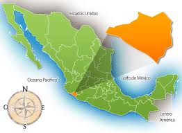

- Su Ubicacion en el Mapa -
Colima está ubicada en la costa central del Pacífico en el occidente de México, limitando al norte con Jalisco, al este con Jalisco y Michoacán, al sur con Michoacán y el Océano Pacífico, y al oeste con el Océano Pacífico y Jalisco.